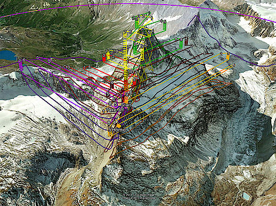
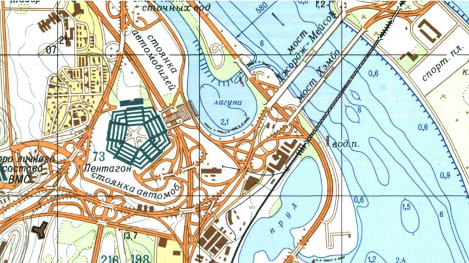
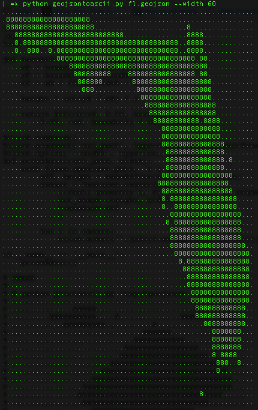
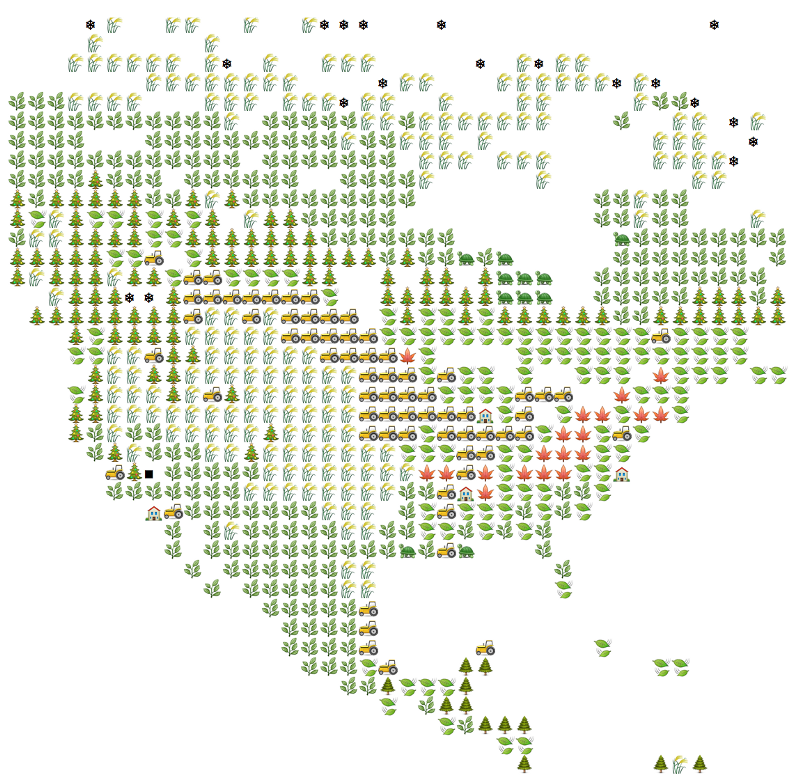

Cartes
The flow towards Europe
We let 10k+ people draw the former inner-german border. This is what happened.
La France par les anglais
Vinelli
l'histoire

Matterhorn avec des drones
la mer d'Aral
Kids in India Are Sparking Urban Planning Changes by Mapping Slums
Breweries
Random Google Maps
Runkeeper
Strava global heatmap
la guerre froide

Cartographers without borders
GoumProd
Vintage
OSM+4D
drapeaux
http://mapsdesign.tumblr.com/
:

ASCII
Ski
DataFrance
Google Timeline
Hillshading/contour lines @Mapbox
British Isles in 2100
Surging seas
Airports Voronoi
Development of Golden Age Amsterdam
Forecast.io
(+ API)
Wind map
QGIS
(2)
The prettiest route
Spotify
GoT
Detroit
chats :)